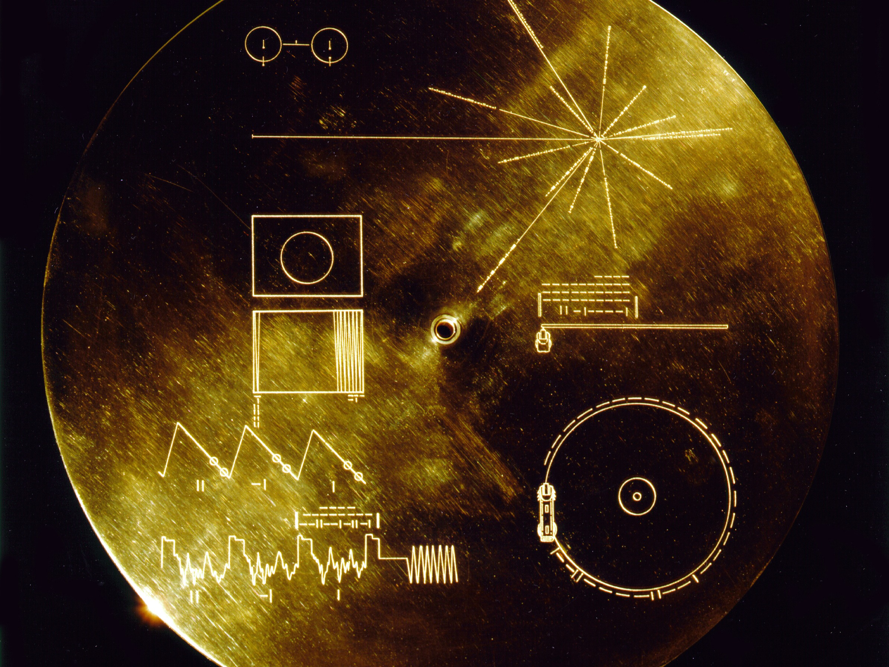

Listen
Orchestral
Concertante

Cumulonimbus
Grace - For String Orchestra, Harp & Chorus

Chamber & Solo
Prelude - For Solo Cello

Soliloquies - For Solo Violin
Voices on the Wind - A Song Cycle for Soprano & Chamber Ensemble
Awakening - For Piano Quartet
Electronic & Electroacoustic
String Quartet No. 1

Drift - For Solo Clarinet & Electronics

Voyager Encounter - For Fixed Media (stereo mix)

Choral
What Wondrous Love
Chronological List of Works
- Dark Nebula (2017) for Wind Orchestra [9:30]
- Sonatina (2017) for Clarinet, Viola and Piano [5:00]
- Duet (2017) Solo Cello and Electronics[8:00]
- Dorothy Dix Talks : Five Vignettes for Soprano & Chamber Ensemble (2017) [27:00]
- Concerto for Orchestra (2016) [32:00]
- Louisville Variations (2015), for Solo Piano [11:30]
- String Quartet No. 1 (2015), for String Quartet and Live Electronics [6:30]
- Concertante (2015), for Symphony Orchestra [2:30]
- 12 Haiku (2015), for Mezzo-Soprano, Solo Violin, Solo Cello and orchestra [25:00]
- Drift (2015), for Solo Clarinet and Tape [5:30]
- Voyager Encounter (2015), For Tape [6:50]
- Soliloquies (2014), for Solo Violin[7:25]
- Bloom (2014), for Orchestra [2:30]
- Prelude (2014), for Solo Cello [3:30]
- What Wondrous Love (2013), for SATB Choir [4:20]
- Where the Foremost Flag Was Flying (2013), for Chamber Wind Ensemble and Solo Baritone Voice [27:00]
- Cumulonimbus (2012), for Orchestra [2:30]
- Voices on the Wind (2012) for Solo Soprano, Flute, Viola, Cello and Prepared Piano [14:00]
- Nocturne in D (2011), For Tape [5:00]
- Ancient Dances (2011) for String Bass Trio [2:30]
- Awakening (2011) for Piano Quartet[5:00]
- Come, Two Choral Poems by Sara Teasdale (2011) for SATB Choir [9:00]
- Grace (2010) for SATB Chorus, String Orchestra and Harp [12:00]
- Sonata for Piano (2010) [5:00]
- Rhapsody for a New Day (2009) for Six Winds and Piano [17:00]
- American Day (2009) for Clarinet in B-flat and Tenor Voice [11:00]
- Aurora (2008) for Orchestra [6:30]